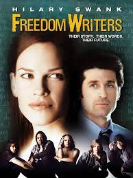

'
| Título do Filme |
Link |
Opinião |
Capa |
| O Menino do Pijama Listrado |
Assistir |
O Menino do Pijama Listrado" é um tocante drama dirigido por Mark Herman, baseado no livro de John
Boyne. A história segue Bruno, um garoto de oito anos que, após se mudar perto de um campo de
concentração, forma uma amizade proibida com Shmuel, um menino do outro lado da cerca. A inocência
infantil contrasta com o horror da guerra, proporcionando uma reflexão profunda sobre amizade,
preconceito e os horrores do Holocausto. |
|
| Cavalo de guerra |
Assistir |
"Cavalo de Guerra", dirigido por Steven Spielberg, é uma épica história sobre a amizade entre um jovem
chamado Albert e seu cavalo, Joey, durante a Primeira Guerra Mundial. O filme impressiona com suas belas
imagens e a emocionante jornada de Joey, que é separado de seu dono e enfrenta os horrores da guerra.
Com temas de lealdade e coragem, a narrativa destaca o impacto do conflito nas vidas dos animais e
humanos. A combinação de drama e visual deslumbrante torna esta obra um relato comovente da conexão
entre homem e animal em tempos de adversidade. |
|
| Escritores da liberdade |
Assistir |
"Escritores da Liberdade" é um emocionante drama baseado na história real de Erin Gruwell, uma
professora que inspira seus alunos em uma escola de ensino médio em Los Angeles após os tumultos
raciais. Com uma abordagem inovadora e sensível, ela usa a escrita para ajudar seus estudantes a se
expressarem e a superarem seus traumas. O filme destaca temas de empatia, diversidade e a busca por
identidade em meio a desafios. As atuações, especialmente de Hilary Swank, tornam a narrativa envolvente
e profundamente tocante. |
 |
| Beleza oculta |
Assistir |
"Beleza Oculta" é um drama tocante que segue a vida de Howard, um publicitário interpretado por Will
Smith, que enfrenta a dor da perda de sua filha. Em sua angústia, ele se conecta com representações
personificadas do Amor, Tempo e Morte, levando a reflexões profundas sobre a vida e a dor. O filme
aborda temas de luto, esperança e a busca por significado, com uma narrativa emocional que provoca
empatia e reflexão. Apesar de algumas críticas à sua abordagem sentimental, suas atuações e mensagem
ressoam fortemente. |
|